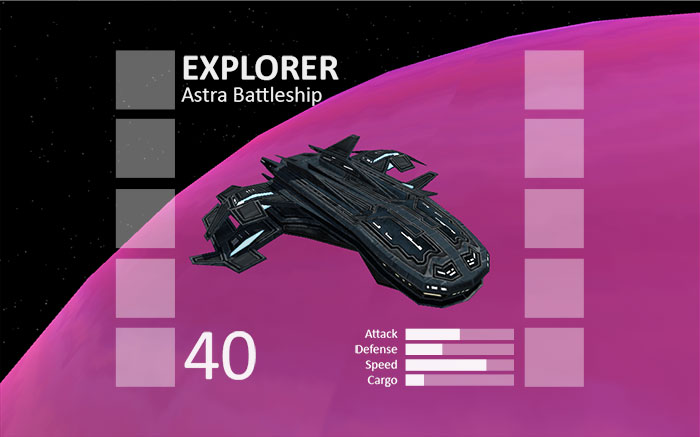
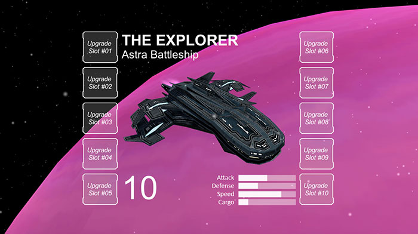
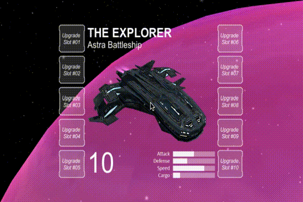
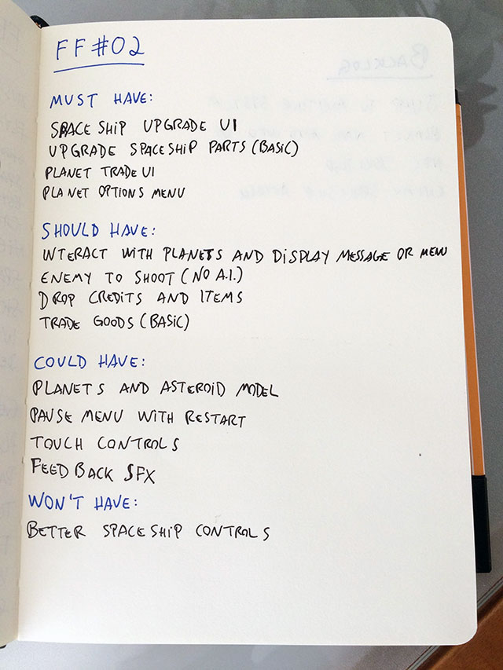

Os últimos posts foram sobre o desenvolvimento da mecânica do jogo, que por enquanto é apenas uma nave atirando em caixas que explodem. Este mês coloquei o gameplay um pouco de lado para trabalhar na interface de usuário (UI) do jogo, e comecei pela principal tela: upgrade e informações sobre a nave.
Quando eu penso na interface para gerenciar os upgrades da nave, na hora me vem na cabeça a interface do jogo Destiny. A ideia de usar um cursor para controlar a tela em um jogo de console foi bem arriscada, mas deu muito certo, e o melhor de tudo é que funcionaria bem em desktops. No caso de dispositivos móveis, basta remover o cursor e usar touch e drag para realizar as mesmas ações.
Inspiração para a interface
Toda semana procuro assistir alguns videos de palestras no canal da GDC no YouTube, e há algum tempo assisti o video abaixo, onde o designer de interface do Destiny conta como foi o processo para chegar no resultado que vemos hoje no jogo. Isto sem dúvidas me inspirou a começar a trabalhar na UI do meu jogo.
A interface do jogo No Man's Sky também é interessante para o que eu quero fazer, e muito similar a interface do Destiny em alguns aspectos, mas acredito que para o meu jogo não iria funcionar. Gosto da ideia de carregar alguns upgrades separados por tipo e selecionar um para ser o ativo para aquele determinado tipo, como o Destiny faz.
Há duas semanas a Unity lançou o video abaixo sobre criação de menus na Unity, que é algo que eu já sabia mas assisti mesmo assim por que sempre acabo aprendendo algo novo. Graças ao video descobri um novo pacote gratuito na asset store da Unity, o Unity Samples: UI, que tem artes com estilo futurista para UI e combinam muito bem com a ideia do jogo.
Criando a interface
Para não bagunçar a scene que estou usando para criar e testar o gameplay, criei uma nova scene chamada PlaygroundUI, onde comecei a trabalhar na UI para o gerenciamento de upgrades da nave. Antes de começar a criar a UI na Unity montei a imagem abaixo no Photoshop, pra ter uma noção de como ficaria antes de começar a montar direto na game engine.

Importei esta imagem na Unity e comecei a montar a UI por cima dela. Esta é uma boa dica para posicionar os elementos de uma nova UI sem perder muito tempo arrastando ou calculado sua localização. É como copiar um desenho com uma outra folha por cima, facilita bastante o trabalho. Utilizei os botões do asset que baixei e deixei com a cor branca transparente para os slots de upgrade, e adicionei umas labels para o textos. Apenas os status abaixo da nave permaneceram uma imagem por enquanto. O resultado na Unity está na imagem abaixo.

Com a UI pronta adicionei o modelo da nave e posicionei de uma maneira semelhante ao personagem no jogo Destiny, e coloquei um planeta bem grande atrás. Fiz um script simples para fazer o planeta girar lentamente e adicionei umas partículas do mesmo asset da UI, foram coisas simples mas que deixam o protótipo com uma cara ainda melhor.
Movimentando a interface
Por fim, comecei a fazer a UI se mover de acordo com a direção do cursor (também igual ao Destiny). A ideia era fazer a UI seguir a direção do cursor, porém fazer a nave ir na direção oposta. Ainda não terminei, preciso encontrar os melhores valores para a movimentação, mas no git abaixo é possível ver um pouco de como está ficando.

Me desculpe pelo gif horrível, é a primeira vez que tento exportar um video em gif e ficou maior do que eu esperava (3MB). Segui este tutorial, mas se alguém tiver uma sugestão de tool ou outra maneira de fazer isso deixe um comentário no post.
Para o movimento fiz um script chamado TestInventory que serve para ambos GameObject e UI, pois cada um tem um componente diferente para controlar o movimento, Transform e RectTransform, respectivamente. Pelo script é possível configurar o tipo do objeto, velocidade horizontal e vertical, e se o objeto deve ir para o sentido normal ou oposto ao cursor.
Para a movimentação utilizei Translate através de uma Coroutine quando o mouse se movimenta pela tela. Também é possível fazer a movimentação com Lerp, mas optei para usar o Translate no protótipo.
Próximos Passos
Acho que foi um bom início para a UI do inventário, pelo menos tenho uma ideia melhor de qual caminho seguir. A interface do Destiny é uma boa base para o meu jogo, mas é claro que ao longo do desenvolvimento vou modificar para ficar de acordo com meu jogo. Os próximos posts provavelmente serão sobre a UI, devo adicionar mais interação com o usuário e customizações nos slots. Quando estiver com o mínimo de recursos que eu preciso, vou adicioná-la na scene do jogo. Como podem ver na minha segunda lista de tarefas abaixo, agora a prioridade é a UI do jogo.

O andamento do projeto pode ser conferido no GitHub, e neste link você pode ver as alterações no projeto até este post. Todos os posts desta série sobre meu projeto podem ser vistos na tag Final Frontier, e como sempre qualquer sugestão ou opinião é bem vinda!